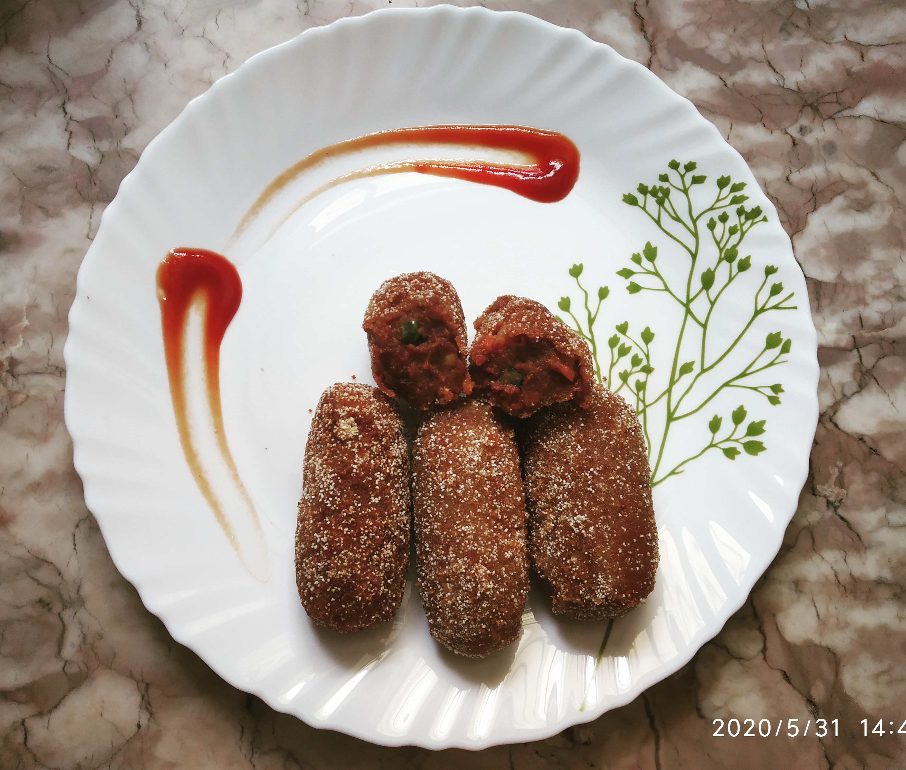

VEGETABLE CHOP
In frame is Vegetable chop, a popular street food from Kolkata and Odisha.
Beetroot,carrot, peanuts and other vegetables are cooked
and coated with breadcrumbs then deep fried till golden brown and served with kasundi(mustard sauce)
INGREDIENTS :
Boiled beetroot
green / yellow peas,chopped carrot,fried groundnut
Semolina and bread crumbs
Dhaniya powder,red chili powder,turmeric powder,hing,garam masala
Salt as per taste
Cornflour
Refined oil
Black salt and black pepper
Salt as per taste
STEPS ONE CAN FOLLOW(if needed) :
First boil the beetroot
Then take a pan and heat oil, then add all the above veggies and toss them well, then add boiled grated beetroot
Then add the masalas and cook it well, later cool it downand give shapes
Then keep in the fridge to get set , then fry it in the oil
Then serve it with ketchup